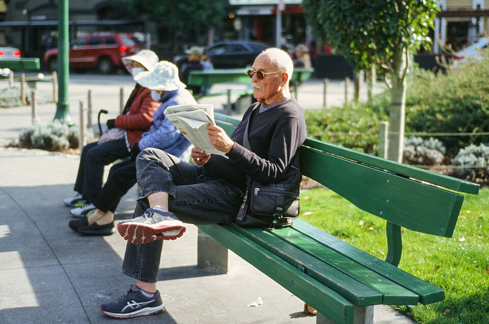

The page that makes the first impression
A newspaper is not only a collection of stories — it is a visual communication medium. The front page presents the day's most important news and guides readers to the rest of the edition.
Attracting Readers
Effective headlines, photographs and layout draw the eye and invite reading.
Establishing News Priority
Arrangement signals which stories the editors consider most important.
Building Identity & Guiding the Reader
Consistent typography builds identity; hierarchy creates a visual path through the news.

The decision follows a decade of studies and public hearings. Officials say construction will begin after the monsoon.

Type is the
voice of the page
Typography covers typefaces, sizes, weights, spacing and line lengths. Headlines are larger and heavier; body text must stay comfortable across long reads; subheadings divide long stories into sections.
For Indian-language newspapers, typography is especially important — the design must support the specific characteristics of each script while keeping readability.
Body text is set smaller again, in narrow justified columns that stay comfortable to read. Subheadings divide the story into sections, and captions explain the photographs.
The hierarchy of sizes — masthead, headline, subhead, body, caption — creates the order in which readers notice information.

The visual
journalism toolkit
A strong news photograph communicates instantly; infographics explain complexity; colour — once rare — now supports branding, section identity and highlight boxes.
Relevant, accurate, captioned, technically suitable, ethically published. Size and position signal the story's importance.
Charts, maps, diagrams, timelines and data graphics for elections, budgets, sports, science and health — accurate and clearly sourced.
Used for branding, headlines, section identification and highlight boxes — but excess colour makes a page cluttered.

A gateway to the
wider newspaper
Digital platforms offer unlimited scrolling, hyperlinks, video and live updates; print has finite space. So the front page must select and prioritise — and act as a bridge to digital content.
Highlight the day's major stories
Create visual interest on newsprint
Direct readers to inside pages
Promote investigative and special reports
Connect readers with digital content — QR codes, websites, social media

Print pages now routinely carry QR codes and web references, connecting the physical page to live results, interactive maps and video explainers online.